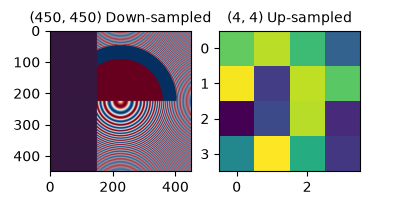
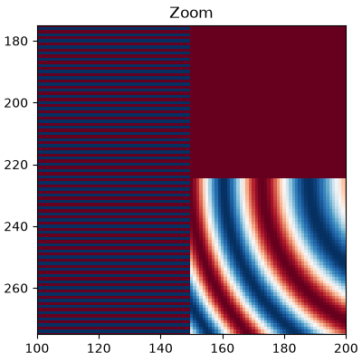
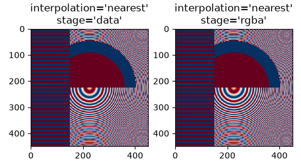
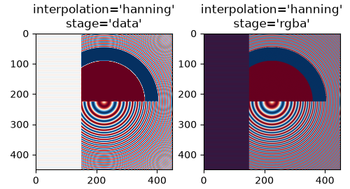
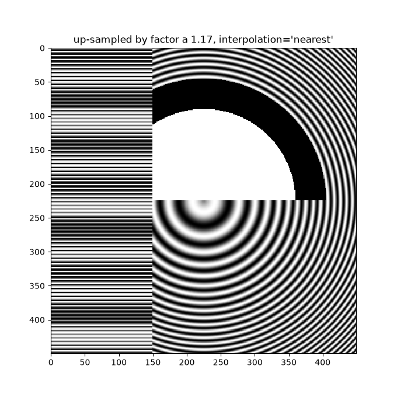
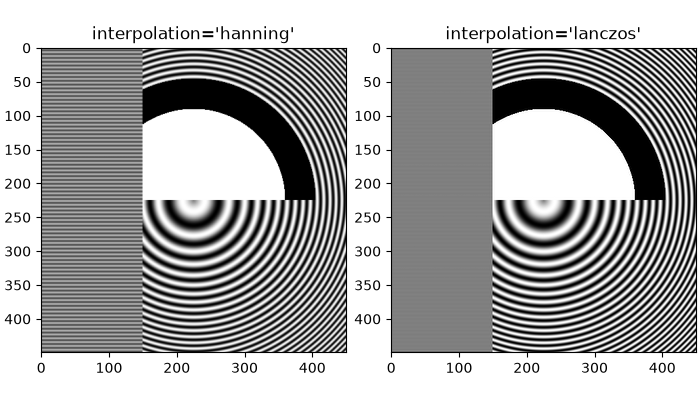
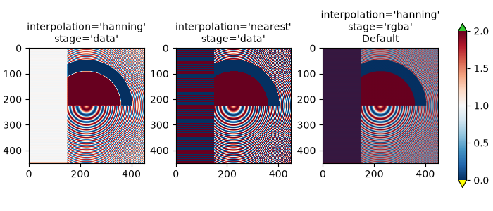
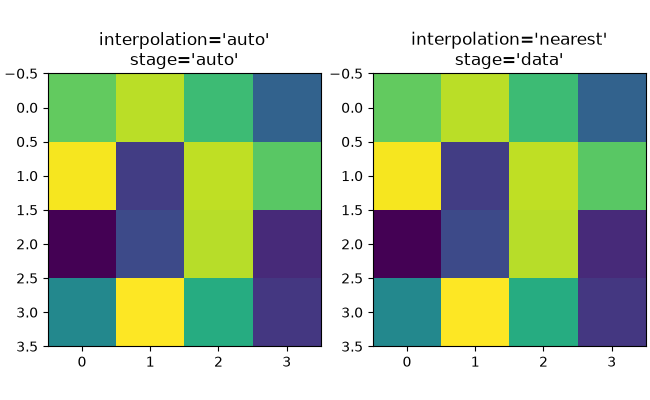
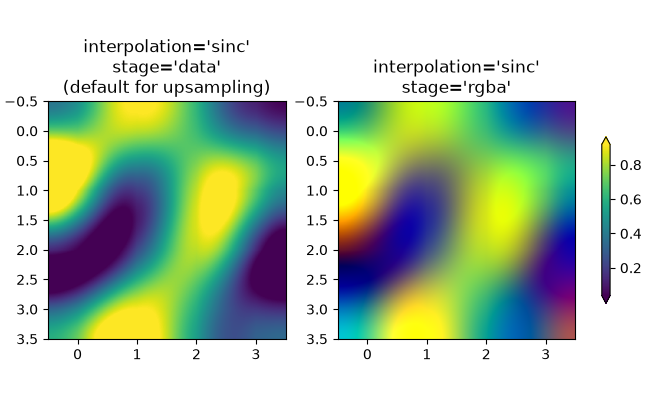
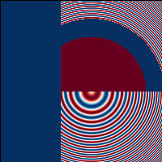

Note
Go to the end to download the full example code.
Image resampling#
Images are represented by discrete pixels assigned color values, either on the
screen or in an image file. When a user calls imshow with a data
array, it is rare that the size of the data array exactly matches the number of
pixels allotted to the image in the figure, so Matplotlib resamples or scales the data or image to fit. If
the data array is larger than the number of pixels allotted in the rendered figure,
then the image will be "down-sampled" and image information will be lost.
Conversely, if the data array is smaller than the number of output pixels then each
data point will get multiple pixels, and the image is "up-sampled".
In the following figure, the first data array has size (450, 450), but is represented by far fewer pixels in the figure, and hence is down-sampled. The second data array has size (4, 4), and is represented by far more pixels, and hence is up-sampled.
import matplotlib.pyplot as plt
import numpy as np
fig, axs = plt.subplots(1, 2, figsize=(4, 2))
# First we generate a 450x450 pixel image with varying frequency content:
N = 450
x = np.arange(N) / N - 0.5
y = np.arange(N) / N - 0.5
aa = np.ones((N, N))
aa[::2, :] = -1
X, Y = np.meshgrid(x, y)
R = np.sqrt(X**2 + Y**2)
f0 = 5
k = 100
a = np.sin(np.pi * 2 * (f0 * R + k * R**2 / 2))
# make the left hand side of this
a[:int(N / 2), :][R[:int(N / 2), :] < 0.4] = -1
a[:int(N / 2), :][R[:int(N / 2), :] < 0.3] = 1
aa[:, int(N / 3):] = a[:, int(N / 3):]
alarge = aa
axs[0].imshow(alarge, cmap='RdBu_r')
axs[0].set_title('(450, 450) Down-sampled', fontsize='medium')
np.random.seed(19680801+9)
asmall = np.random.rand(4, 4)
axs[1].imshow(asmall, cmap='viridis')
axs[1].set_title('(4, 4) Up-sampled', fontsize='medium')

Matplotlib's imshow method has two keyword arguments to allow the user
to control how resampling is done. The interpolation keyword argument allows
a choice of the kernel that is used for resampling, allowing either anti-alias filtering if
down-sampling, or smoothing of pixels if up-sampling. The
interpolation_stage keyword argument, determines if this smoothing kernel is
applied to the underlying data, or if the kernel is applied to the RGBA pixels.
interpolation_stage='rgba': Data -> Normalize -> RGBA -> Interpolate/Resample
interpolation_stage='data': Data -> Interpolate/Resample -> Normalize -> RGBA
For both keyword arguments, Matplotlib has a default "antialiased", that is recommended for most situations, and is described below. Note that this default behaves differently if the image is being down- or up-sampled, as described below.
Down-sampling and modest up-sampling#
When down-sampling data, we usually want to remove aliasing by smoothing the image first and then sub-sampling it. In Matplotlib, we can do that smoothing before mapping the data to colors, or we can do the smoothing on the RGB(A) image pixels. The differences between these are shown below, and controlled with the interpolation_stage keyword argument.
The following images are down-sampled from 450 data pixels to approximately 125 pixels or 250 pixels (depending on your display). The underlying image has alternating +1, -1 stripes on the left side, and a varying wavelength (chirp) pattern in the rest of the image. If we zoom, we can see this detail without any down-sampling:
fig, ax = plt.subplots(figsize=(4, 4), layout='compressed')
ax.imshow(alarge, interpolation='nearest', cmap='RdBu_r')
ax.set_xlim(100, 200)
ax.set_ylim(275, 175)
ax.set_title('Zoom')

If we down-sample, the simplest algorithm is to decimate the data using nearest-neighbor interpolation. We can do this in either data space or RGBA space:

Nearest interpolation is identical in data and RGBA space, and both exhibit Moiré patterns because the high-frequency data is being down-sampled and shows up as lower frequency patterns. We can reduce the Moiré patterns by applying an anti-aliasing filter to the image before rendering:
fig, axs = plt.subplots(1, 2, figsize=(5, 2.7), layout='compressed')
for ax, interp, space in zip(axs.flat, ['hanning', 'hanning'],
['data', 'rgba']):
ax.imshow(alarge, interpolation=interp, interpolation_stage=space,
cmap='RdBu_r')
ax.set_title(f"interpolation='{interp}'\nstage='{space}'")
plt.show()

The Hanning filter smooths the underlying data so that each new pixel is a weighted average of the original underlying pixels. This greatly reduces the Moiré patterns. However, when the interpolation_stage is set to 'data', it also introduces white regions to the image that are not in the original data, both in the alternating bands on the left hand side of the image, and in the boundary between the red and blue of the large circles in the middle of the image. The interpolation at the 'rgba' stage has a different artifact, with the alternating bands coming out a shade of purple; even though purple is not in the original colormap, it is what we perceive when a blue and red stripe are close to each other.
The default for the interpolation keyword argument is 'auto' which will choose a Hanning filter if the image is being down-sampled or up-sampled by less than a factor of three. The default interpolation_stage keyword argument is also 'auto', and for images that are down-sampled or up-sampled by less than a factor of three it defaults to 'rgba' interpolation.
Anti-aliasing filtering is needed, even when up-sampling. The following image up-samples 450 data pixels to 530 rendered pixels. You may note a grid of line-like artifacts which stem from the extra pixels that had to be made up. Since interpolation is 'nearest' they are the same as a neighboring line of pixels and thus stretch the image locally so that it looks distorted.
fig, ax = plt.subplots(figsize=(6.8, 6.8))
ax.imshow(alarge, interpolation='nearest', cmap='grey')
ax.set_title("up-sampled by factor a 1.17, interpolation='nearest'")

Better anti-aliasing algorithms can reduce this effect:
fig, ax = plt.subplots(figsize=(6.8, 6.8))
ax.imshow(alarge, interpolation='auto', cmap='grey')
ax.set_title("up-sampled by factor a 1.17, interpolation='auto'")
Apart from the default 'hanning' anti-aliasing, imshow supports a
number of different interpolation algorithms, which may work better or
worse depending on the underlying data.

A final example shows the desirability of performing the anti-aliasing at the RGBA stage when using non-trivial interpolation kernels. In the following, the data in the upper 100 rows is exactly 0.0, and data in the inner circle is exactly 2.0. If we perform the interpolation_stage in 'data' space and use an anti-aliasing filter (first panel), then floating point imprecision makes some of the data values just a bit less than zero or a bit more than 2.0, and they get assigned the under- or over- colors. This can be avoided if you do not use an anti-aliasing filter (interpolation set set to 'nearest'), however, that makes the part of the data susceptible to Moiré patterns much worse (second panel). Therefore, we recommend the default interpolation of 'hanning'/'auto', and interpolation_stage of 'rgba'/'auto' for most down-sampling situations (last panel).
a = alarge + 1
cmap = plt.get_cmap('RdBu_r')
cmap.set_under('yellow')
cmap.set_over('limegreen')
fig, axs = plt.subplots(1, 3, figsize=(7, 3), layout='constrained')
for ax, interp, space in zip(axs.flat,
['hanning', 'nearest', 'hanning', ],
['data', 'data', 'rgba']):
im = ax.imshow(a, interpolation=interp, interpolation_stage=space,
cmap=cmap, vmin=0, vmax=2)
title = f"interpolation='{interp}'\nstage='{space}'"
if ax == axs[2]:
title += '\nDefault'
ax.set_title(title, fontsize='medium')
fig.colorbar(im, ax=axs, extend='both', shrink=0.8)

Up-sampling#
If we up-sample, then we can represent a data pixel by many image or screen pixels. In the following example, we greatly over-sample the small data matrix.
np.random.seed(19680801+9)
a = np.random.rand(4, 4)
fig, axs = plt.subplots(1, 2, figsize=(6.5, 4), layout='compressed')
axs[0].imshow(asmall, cmap='viridis')
axs[0].set_title("interpolation='auto'\nstage='auto'")
axs[1].imshow(asmall, cmap='viridis', interpolation="nearest",
interpolation_stage="data")
axs[1].set_title("interpolation='nearest'\nstage='data'")
plt.show()

The interpolation keyword argument can be used to smooth the pixels if desired. However, that almost always is better done in data space, rather than in RGBA space where the filters can cause colors that are not in the colormap to be the result of the interpolation. In the following example, note that when the interpolation is 'rgba' there are red colors as interpolation artifacts. Therefore, the default 'auto' choice for interpolation_stage is set to be the same as 'data' when up-sampling is greater than a factor of three:
fig, axs = plt.subplots(1, 2, figsize=(6.5, 4), layout='compressed')
im = axs[0].imshow(a, cmap='viridis', interpolation='sinc', interpolation_stage='data')
axs[0].set_title("interpolation='sinc'\nstage='data'\n(default for upsampling)")
axs[1].imshow(a, cmap='viridis', interpolation='sinc', interpolation_stage='rgba')
axs[1].set_title("interpolation='sinc'\nstage='rgba'")
fig.colorbar(im, ax=axs, shrink=0.7, extend='both')

Avoiding resampling#
It is possible to avoid resampling data when making an image. One method is
to simply save to a vector backend (pdf, eps, svg) and use
interpolation='none'. Vector backends allow embedded images, however be
aware that some vector image viewers may smooth image pixels.
The second method is to exactly match the size of your axes to the size of your data. The following figure is exactly 2 inches by 2 inches, and if the dpi is 200, then the 400x400 data is not resampled at all. If you download this image and zoom in an image viewer you should see the individual stripes on the left hand side (note that if you have a non hiDPI or "retina" screen, the html may serve a 100x100 version of the image, which will be downsampled.)
fig = plt.figure(figsize=(2, 2))
ax = fig.add_axes((0, 0, 1, 1))
ax.imshow(aa[:400, :400], cmap='RdBu_r', interpolation='nearest')
plt.show()

References
The use of the following functions, methods, classes and modules is shown in this example:
Total running time of the script: (0 minutes 4.967 seconds)